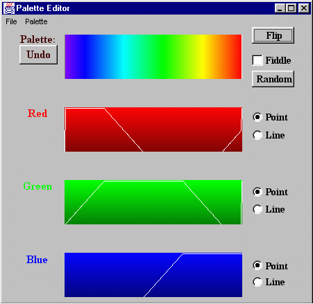
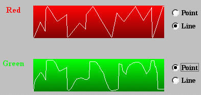

[Index]
[Prev]
[Next]
[Bottom]
Chapter 10: The Palette Editor
The palette editor is a tool to change image colors. The color palette displays
the color values for the current foreground and background colors. Changing the
palette will change the color of the image. The palette editor uses the
RGB (red, green and blue) model to store image colors. Using this model, each of
the 256 colors is stored as some blend of varying quantities of red, green, and
blue. Any or all of the three components can be changed for any pixel, changing
the color displayed for that pixel.
- 10.1 Palette Editor Window
- 10.2 Palette Menu
- 10.3 Palette Options
- 10.4 Saving a New Color Palette
10.1 Palette Editor Window
To start the palette editor, you can either select New Palette
from the Palette menu in the image window, or press the
Palette button in the animation window. Either action will open
the palette editor window.
The palette editor window provides several features for palette control.
The Undo button, on the left, can be used at any point to revert
to the original palette settings. Four color panels appear in the middle
of the window: the edited color panel, the red color panel, the green
color panel, and the blue color panel. To the right are several control
and selection buttons: flip, fiddle, random,
point, and line.

Figure 10.1 The palette editor
10.2 Palette Menu
The palette editor provides several predefined color scales. You can
select a predefined color scale from the palette menu in the palette
editor and modify it to make the best color palette for the image.
-
GrayScale
GrayScale-Banded
GrayScale-Inverted
Rainbow
Rainbow-Banded
Rainbow-Inverted
Rainbow-Striped
|
- Grayscale accepts the grayscale built-in palette for
the current image.
- Grayscale-banded is another type of grayscale palette.
- Rainbow is a linear hue ramp from purple to red at
maximum saturation and value.
- Rainbow-banded is another type of rainbow palette.
10.3 Palette Options
- Each color panel has a Point and a Line button.
The default setting is Point, allowing you to move the cursor
on the panel and change the color table point by point. Line
allows you to change the color table line by line. The following is
an example of changing color by line and by point.

Figure 10.2 Color panel
- Undo recovers the palette table from all the changes
and restores the original color values.
- Fiddle is used to squeeze or expand the color table.
To squeeze or expand the color table, first select Fiddle,
then move the cursor up or down on the color panels.
- Flip flips the color table. It replaces the first
value in the selected interval with the last value for each
displayed component, second value with the next to last, and so on.
- Random randomly sets the palette values. To select
random palette values, first make sure that Fiddle is
unselected, and then select Random.
10.4 Saving a New Color Palette
To save a new color palette and attach it to an image, select
Set Palette from the image window Palette menu
before closing the palette editor.
[Index]
[Prev]
[Next]
[Bottom]

The National Center for Supercomputing Applications
University of Illinois at Urbana-Champaign
hdfhelp@ncsa.uiuc.edu